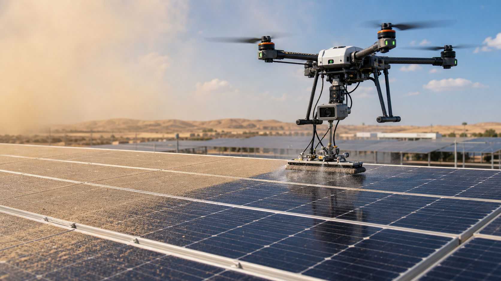

ירידת תפוקה
אבק, חול, בוץ אחרי גשם ולשלשת מצמצמים את האור שמגיע לתאים הפוטו-וולטאיים.

Investor presentation
מערכת רובוטית שמזהה לכלוך על פאנלים סולאריים, מחליטה מתי ניקוי משתלם, ומבצעת ניקוי מקומי בטוח ללא צורך בעבודה ידנית בגובה.
The opportunity
Structor Robotics מפתחת שכבת רובוטיקה ותוכנה שמחברת רחפן, חיישנים, ראייה ממוחשבת ומנגנון ניקוי קל. המטרה היא להוכיח POC תוך 12 חודשים ולפתוח שוק שירותים לבעלי מערכות סולאריות, חברות תחזוקה ושותפי אנרגיה.
Problem
אבק, חול, בוץ אחרי גשם ולשלשת מצמצמים את האור שמגיע לתאים הפוטו-וולטאיים.
בעל מערכת על גג בדרך כלל אינו מחזיק אישור, ציוד וצוות לניקוי בטוח בגובה.
ניקוי לפי לוח זמנים קבוע מבוצע לעיתים מוקדם מדי או מאוחר מדי, בלי מדידה כלכלית.
Evidence
NLR מציג מפת soiling לפאנלים פוטו-וולטאיים, ומחקר arXiv מ-2025 מצא שלכלוך כבד יכול לחסום עד 55% מהאור הנראה. לכן הפתרון צריך להתחיל במדידה, ולא רק בניקוי.
Solution
ה-POC יוכיח רחפן או פלטפורמה אווירית עם מצלמה, חיישנים, אלגוריתם זיהוי לכלוך ומנגנון ניקוי עדין: מברשת רכה, מיקרופייבר או התזת מים נמוכה ומבוקרת.
צילום, השוואת אזורים נקיים ומלוכלכים, וסיווג אזורים שדורשים טיפול.
ניקוי לפי צורך אמיתי ולא לפי ביקור קבוע, כדי לשמור על תפוקה ולהקטין הוצאות.
פעולה עדינה על אזור ניסוי, ללא נשיאת כמות מים גדולה וללא שריטות.
Technology
זיהוי רמת אבק, כתמים ואזורים שבהם הלכלוך משפיע על תפוקה.
גישה מבוקרת לפאנל בתנאי ניסוי, עם מפעיל אנושי ועצירת חירום.
מנגנון קל שאינו פוגע בציפוי הפאנל ומתאים ל-POC בטוח.
תיעוד מצב לפני/אחרי, זמן מחזור, איכות ניקוי ונתוני בטיחות.
POC plan
בחירת פאנלים, תרחיש ניסוי, ספי לכלוך ותוכנית בטיחות.
חיישנים, dataset ראשוני, אלגוריתם ומנגנון ניקוי קל.
רחפן, חיישנים, ניקוי, בדיקות גישה ותיעוד ניסויי POC.
דוח טכני, שותפי פיילוט, חומרי הצגה וסבב המשך.
Business
ביקור לפי צורך או לפי שיפור תפוקה לאחר אירועי אבק.
מנוי לניטור מצב פאנלים והמלצה מתי לנקות.
רישוי תוכנה וחיישנים לחברות תחזוקה ואנרגיה.
Budget
התקציב מיועד לרכיבי רחפן, מנגנון ניקוי, חיישנים, תוכנה, ניסויים, ייעוץ בטיחות, IP וחומרים למשקיעים. מתוך תקציב השיווק: 15,000 ₪ לאירועים מקצועיים ו-30,000 ₪ לפרסום דיגיטלי, קריאייטיב ואנליטיקה.
Team
לבעל החברה שלמה איידלשטיין ניסיון מעשי בהתקנת מערכות סולאריות ועבודה בגובה. לצוות יש ניסיון בפיתוח אפליקציות, פרסום מוצרים ב-App Store, רובוטיקה, תוכנה ומוצר. השילוב הזה מתאים לפרויקט שדורש גם הבנת שטח וגם מערכת תוכנה מדידה.
Contact
נשמח לדבר עם בעלי מערכות סולאריות, חברות תחזוקה, EPC, חברות אנרגיה ומשקיעים שמחפשים רובוטיקה לשוק האנרגיה המתחדשת.